소방시설관리사 (2019-05-11 기출문제)
1과목: 방안전관리론
1. 공기 중의 산소농도가 증가할수록 화재 시 일어나는 현상으로 옳지 않은 것은?
- 점화에너지가 커진다.
- 발화온도가 낮아진다.
- 폭발범위가 넓어진다.
- 연소속도가 빨라진다.
(정답률: 62%)

2. 물이 어는 온도(0℃)를 화씨온도(℉)와 절대온도(°R)로 나타낸 옳은 것은?
- 0℉, 460°R
- 0℉, 492
- 32℉, 460°R
- 32℉, 492
(정답률: 61%)
3. 가연물의 종류와 연소형태의 연결이 옳지 않은 것은?
- 숯-표면연소
- 에틸벤젠-자기연소
- 가솔린-증발연소
- 종이-분해연소
(정답률: 74%)
4. 건축물의 피난ㆍ방화구조 등의 기준에 관한 규칙에서 정하고 있는 갑종방화문의 성능기준으로 ()에 들어갈 내용으로 옳은 것은?
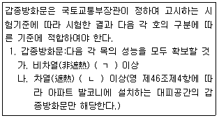
- ㄱ:30분, ㄴ:30분
- ㄱ:30분, ㄴ:1시간
- ㄱ:1시간, ㄴ:30분
- ㄱ:1시간, ㄴ:1시간
(정답률: 59%)
5. 다음 물질의 증기비중이 낮은 것부터 높은 순으로 바르게 나열한 것은?
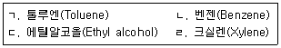
- ㄴ-ㄱ-ㄹ-ㄷ
- ㄴ-ㄷ-ㄱ-ㄹ
- ㄷ-ㄱ-ㄹ-ㄴ
- ㄷ-ㄴ-ㄱ-ㄹ
(정답률: 56%)
6. 산불화재의 형태의 관한 설명으로 옳지 않은 것은?
- 지중화는 산림 지중에 있는 유기질층이 타는 것이다.
- 지표화는 산림 지면에 떨어져 있는 낙엽, 마른풀 등의 타는 것이다.
- 수관화는 나무의 줄기가 타는 것이다.
- 비화는 강풍 등에 의해 불꽃이 날아가 타는 것이다.
(정답률: 62%)
7. 다음에서 설명하는 폭발은?
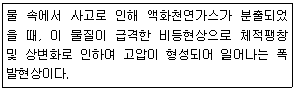
- 증기폭발
- 분해폭발
- 중합폭발
- 산화폭발
(정답률: 57%)
8. 온도변화에 따른 연소범위에서 ()에 들어갈 내용으로 옳은 것은?
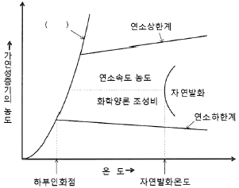
- 삼중합선
- 연소점곡선
- 공연비곡선
- 포화증기압선
(정답률: 58%)
9. 화재의 종류별 특성에 관한 옳지 않은 것은?
- 금속화재는 나트륨, 칼륨 등 금속가연물에 의한 화재로 물에 의한 냉각소화가 효과적이다.
- 유류화재는 인화성액체에 의한 화재로 (Foam)를 이용한 질식소화가 효과적이다.
- 전기화재는 통전 중인 전기기기에서 발생하는 화재로 이산화탄소에 의한 질식소화가 효과적이다.
- 일반화재는 종이, 목재에 의한 화재로 물에 의한 냉각소화가 효과적이다.
(정답률: 74%)
10. 두께 3cm인 내열판의 한 쪽 면의 온도는 500℃, 다른 쪽 면의 온도는 50℃일 때, 이 판을 통해 일어나는 열전달량(W/m2)은? (단, 내열판의 열전도도는 0.1W/mㆍ℃이다.)
- 13.5
- 150.0
- 1350.0
- 1500.0
(정답률: 52%)
11. 피난원칙 중 폐일세이프(Fail safe)에 관한 설명으로 옳은 것은?
- 피난경로는 간단명료하게 하여야 한다.
- 피난수단은 원시적 방법에 의한 것을 원칙으로 한다.
- 비상 시 판단능력 저하를 대비하여 누구나 알 수 있도록 피난수단 등을 문자나 그림 등으로 표시한다.
- 피난 시 하나의 수단이 고장으로 실패하여도 다른 수단에 의해 피난할 수 있도록 하는 것을 말한다.
(정답률: 68%)
12. 화재예방, 소방시설 설치ㆍ유지 및 안전관리에 관한 법령상 특정소방대상물의 규모 등에 따라 갖추어야 하는 소방시설의 수용인원 산정 방법으로 ()에 들어갈 내용으로 옳은 것은?
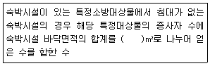
- 0.45
- 1.9
- 3
- 4.6
(정답률: 69%)
13. 다음에서 설명하는 화재 현상은?
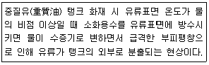
- 보일오버(Boil over)
- 슬롭오버(Slop over)
- 프로스오버(Froth over)
- 플래시오버(Flash over)
(정답률: 54%)
14. 건축물의 피난ㆍ방화구조 등의 기준에 관한 규칙에서 정하고 있는 건축물의 피난안전구역의 설치기준 중 구조 및 설비기준으로 옳지 않은 것은?
- 피난안전구역의 높이는 2.1미터 이상일 것
- 피난안전구역의 내부마감재료는 준불연재료로 설치할 것
- 비상용 승강기는 피난안전구역에서 승하차 할 수 있는 구조로 설치할 것
- 건축물의 내부에서 피난안전구역으로 통하는 계단은 특별피난계단의 구조로 설치할 것
(정답률: 60%)
15. 화재성장속도의 분류별 약 1MW의 열량에 도달하는 시간으로 ()에 들어갈 내용으로 옳은 것은?
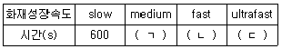
- ㄱ:200, ㄴ:100, ㄷ:50
- ㄱ:300, ㄴ:150, ㄷ:75
- ㄱ:400, ㄴ:200, ㄷ:100
- ㄱ:450, ㄴ:300, ㄷ:150
(정답률: 65%)
16. 내화건축물의 구획실내에서 가연물의 연소 시, 성장기의 지배적 열전달로 옳은 것은?
- 복사
- 대류
- 전도
- 확산
(정답률: 40%)
17. 화재로 인해 공장 벽체의 내부 표면온도가 450℃까지 상승하였으며, 벽체 외부의 공기온도는 15℃일 때 벽체 외부 표면온도(℃)는 약 얼마인가? (단, 벽체의 두께는 200mm이고, 벽체의 열전도계수는 0.69W/mㆍK, 대류열전달계수는 12W/m2ㆍK이다. 복사의 영향과 벽체 상ㆍ하부로의 열전달 및 기타의 손실은 무시하며, 0℃는 273K이고, 소수점 이하 셋째자리에서 반올림한다.)
- 112.14
- 121.14
- 235.14
- 385.14
(정답률: 24%)
18. 다음에서 설명하는 연소생성물은?
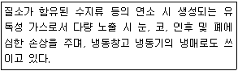
- 이산화질소(NO2)
- 이산화탄소(CO2)
- 암모니아(NH3)
- 시안화수소(HCN)
(정답률: 58%)
19. 연소생성물 중 연기가 인간에 미치는 유해성을 모두 고른 것은?
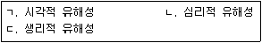
- ㄱ, ㄴ
- ㄱ, ㄷ
- ㄴ, ㄷ
- ㄱ, ㄴ, ㄷ
(정답률: 65%)
20. 연기농도를 측정하는 감광계수, 중량농도법, 입자농도법의 단위를 순서대로 나열한 것으로 옳은 것은?
- m-1, 개/cm3, mg/m3
- m-1, mg/m3, 개/cm3
- m-3, mg/m3, 개/cm3
- m-3, 개/cm3, mg/m3
(정답률: 60%)
21. 제연방식으로 ()에 들어갈 내용으로 옳은 것은?
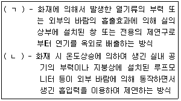
- ㄱ:자연제연방식, ㄴ:기계제연방식
- 밀폐제연방식, ㄴ:급배기 기계지연방식
- ㄱ:밀폐제연방식, ㄴ:스모크타워 제연방식
- ㄱ:자연제연방식, ㄴ:스모크타워 제연방식
(정답률: 64%)
22. 면적이 0.15m2인 합판이 연소되면서 발생한 열방출량(Heat release rate)(kW)은 약 얼마인가? (단, 평균질량감소율은 0.03kg/m2ㆍs, 연소열은 25kJ/g, 연소효율은 55%이며, 소수점 이하 셋째자리에서 반올림한다.)
- 0.06
- 0.20
- 61.88
- 204.50
(정답률: 38%)
23. 화재풀룸(Fire plume)에 관한 설명으로 옳지 않은 것은?
- 측면에서는 층류에 의한 부분적인 와류를 생성한다.
- 내부에 형성되는 기류는 중앙부의 부력이 가장 강하다.
- 열원으로부터 점차 멀어질수록 주변으로 넓게 퍼져가는 모습을 나타낸다.
- 고온의 연소생성물은 부력에 의해 위로 상승한다.
(정답률: 47%)
24. 다음에서 설명하는 연소방식은?
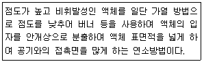
- 자기연소
- 확산연소
- 분무연소
- 예혼합연소
(정답률: 64%)
25. 환기구로 에너지가 유출되는 것을 의미하는 환기계수로 옳은 것은? (단, A는 면적, H는 높이이다.)
- A√H
- H√A
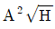
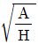
(정답률: 60%)
2과목: 소방수리학·약제화학 및 소방전
26. 이상기체의 부피변화와 관련된 것은?
- 아르키메데스(Archimedes)의 원리
- 아보가드로(Avogadro)의 법칙
- 베르누이(Bernoulli)의 정리
- 하젠-윌리엄스(Hazen-Wiloliams)의 공식
(정답률: 58%)
27. 모세관 현상으로 인해 물이 상승할 때, 그 상승높이에 관한 설명으로 옳지 않은 것은?
- 관의 직경에 비례한다.
- 표면장력에 비례한다.
- 물의 비중량에 반비례한다.
- 수면과 관의 접촉각이 커질수록 감소한다.
(정답률: 42%)
28. 다시-바이스바하(Darcy-Weisbach) 공식에서 마찰손실수두에 관한 설명으로 옳지 않은 것은?
- 관의 직경에 반비례한다.
- 관의 길이에 비례한다.
- 마찰손실계수에 비례한다.
- 유속에 반비례한다.
(정답률: 54%)
29. 상ㆍ하판의 가격이 5cm인 두 판 사이에 점성계수가 0.001Nㆍs/m2인 뉴턴 유체(Nertonian fluid) 가 있다. 상판이 수평방향으로 2.5m/s로 움직일 때, 발생하는 전당응력(N/m2)은? (단, 하판은 고정되어 있다.)
- 0.⑤
- 0.50
- 5.00
- 50.0
(정답률: 43%)
30. 전양정이 30m인 펀프가 물을 0.03m3/s로 수송할 때, 펌프의 축동력(kW)은 약 얼마인가? (단, 물의 비중량은 9,800N/m3, 중력가속도는 9.8m/s2, 펌프의 효율은 60%이다.)
- 1.44
- 1.47
- 14.7
- 144
(정답률: 46%)
31. 배관 내 평균유속 5m/s로 물이 흐르고 있다가 갑작스런 밸브의 잠김으로 발생되는 압력상승(MPa)은 약 얼마인가? (단, 물의 비중량은 9,800N/m3, 유체 내 압축파의 전달속도는 1,494m/s, 중력가속도는 9.8m/s2이다.)
- 7.32
- 7.47
- 73.2
- 74.7
(정답률: 35%)
32. 폭이 a이고 높이가 b인 직사각형 단면을 갖는 배관의 마찰손실수두를 계산할 때, 수력반경(hydraulic radius)은?
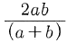
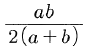
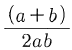
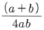
(정답률: 52%)
33. 층류 상태로 직경 5cm인 원형관 내 흐를 수 있는 물의 최대 유량(m3/s)은 약 얼마인가? (단, 물의 비중량은 9,800N/m, 물의 점성계수는 10×10-3Nㆍs/m2, 층류의 상한계 레이놀즈(Reynolds)수는 2,000, 중력가속도는 9.8m/s2, 원주율은 3.0이다.) (문제 오류로 실제 시험에서는 모두 정답처리 되었습니다. 여기서는 1번을 누르면 정답 처리 됩니다.)
- 7.35×10-5
- 7.50×10-5
- 7.35×10-2
- 7.50×10-2
(정답률: 50%)
34. 관수로 흐름의 유량을 측정할 수 없는 장치는?(오류 신고가 접수된 문제입니다. 반드시 정답과 해설을 확인하시기 바랍니다.)
- 피토관(Ritot tube)
- 오리피스(Orifice)
- 벤추리미터(Venturi meter)
- 파샬플룸(Parshall flume)
(정답률: 43%)
35. 분말소화약제에 관한 설명으로 옳지 않은 것은?
- 분말의 안식각이 작을수록 유동성이 커진다.
- 제1종 분말소화약제를 저장하는 경우 분말소화약제 1kg 당 저장용기의 내용적은 0.8L이다.
- 제2종 분말소화약제의 주성분은 탄산수소나트륨(NaHCO3)이다.
- 제3종 분말소화약제의 주성분은 제1인산암모늄(NH4H2PO4이다.
(정답률: 52%)
36. 이산화탄소소화설비의 화재안전기준상 소화에 필요한 이산화탄소의 설계농도(%)가 가장 높은 것은?
- 프로판
- 에틸렌
- 산화에텔렌
- 에탄
(정답률: 44%)
37. 1기압 20℃에서 기체상태로 존재하는 것을 모두 고른 것은?
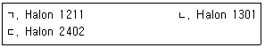
- ㄱ, ㄴ
- ㄱ, ㄷ
- ㄴ, ㄷ
- ㄱ, ㄴ, ㄷ
(정답률: 47%)
38. 단백포소화약제 3%형 18L를 이용하여 팽창비가 5가 되도록 포를 방출할 때 발생된 포의 체적(m3)은?
- 0.08
- 0.3
- 3.0
- 6.0
(정답률: 51%)
39. 물에 관한 설명으로 옳지 않은 것은?
- 압력이 감소함에 따라 비등점은 낮아진다.
- 물의 기화열은 융해열보다 크다.
- 물의 표면장력을 낮추는 경우 침투성이 강화된다.
- 온도가 상승할수록 물의 점도는 증가한다.
(정답률: 55%)
40. 연소에 관한 설명으로 옳지 않은 것은?
- 자기반응성 물질은 외부에서 공급되는 산소가 없는 경우 연소하지 않는다.
- 연소는 산화반응의 일종이다.
- 메탄이 완전연소를 하는 경우 이산화탄소가 발생한다.
- 일산화탄소는 연소가 가능한 가연성물질이다.
(정답률: 54%)
41. 벤추리관의 벤추리작용을 이용하는 기계포 소화약제의 혼합방식을 모두 고른 것은?
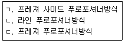
- ㄱ, ㄴ
- ㄱ, ㄷ
- ㄴ, ㄷ
- ㄱ, ㄴ, ㄷ
(정답률: 45%)
42. 다음 진리표를 만족하는 시퀀스 회로를 설계하고자 한다. 출력에 관한 논리식으로 옳지 않은 것은?
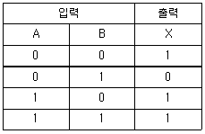
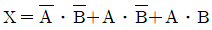
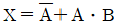
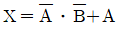
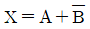
(정답률: 34%)
43. 전기력선의 기본 성질에 관한 설명으로 옳지 않은 것은?
- 전기력선은 서로 교차하지 않는다.
- 전계의 세기는 전기력선의 밀도와 같다.
- 전기력선은 등전위면과 직교한다.
- 전계의 세기는 도체 내부에서 가장 크다.
(정답률: 49%)
44. 다음 그림과 같이 직렬로 접속된 2개의 코일에 10A의 전류를 흘릴 경우, 합성 코일에 발생하는 에너지(J)는 얼마인가? (단, 결합계수는 0.6이다.)
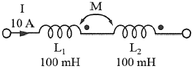
- 4
- 10
- 12
- 16
(정답률: 29%)
45. 동일한 배터리와 전구를 사용하여 그림과 같이 2개의 회로를 구성하였다. 다음 중 옳은 것은?
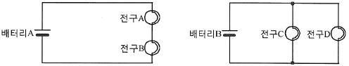
- 모든 전구의 밝기는 동일하다.
- 모든 배터리의 사용시간은 동일하다.
- 전구 C는 전구 A보다 밝다.
- 배터리 B의 사용시간은 배터리 A보다 길다.
(정답률: 48%)
46. 정전용량 1F에 해당하는 것은?
- 1V의 전압을 가하여 1C의 전하가 축적된 경우
- 1W의 전력을 1초 동안 사용한 경우
- 1C의 전하가 1초 동안 흐른 경우
- 1C의 전하가 이동하여 1J의 일을 한 경우
(정답률: 44%)
47. 그림과 같은 저항기의 값이 4.7MΩ이고 허용오차가 ±10%일 때, 이 저항기의 섹띠(color code)를 바르게 나열한 것은?
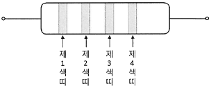
- 제1색띠:적색(red), 제2색띠:청색(blue), 제3섹띠:황색(yellow), 제4색띠:금색(gold)
- 제1색띠:녹색(green), 제2색띠:회색(gray), 제3섹띠:청색(blue), 제4색띠:금색(gold)
- 제1색띠:황색(yellow), 제2색띠:자색(Violet), 제3섹띠:녹색(green), 제4색띠:은색(silver)
- 제1색띠:등색(orange), 제2색띠:녹색(green), 제3섹띠:회색(gray), 제4색띠:은색(silver)
(정답률: 43%)
48. 소비전력이 3W인 스피커에 DC 1.5V, 2000mAh의 배터리 2개를 병렬 연결하여 사용하고 있다. 이 스피커를 최대 출력으로 사용할 경우, 예상되는 사용시간은?
- 1시간
- 2시간
- 4시간
- 8시간
(정답률: 47%)
49. 대칭 3상 Y결선 회로에 관한 설명으로 옳지 않은 것은?
- 상전압은 선간전압보다 위상이 30° 앞선다.
- 선간전압의 크기는 상전압의 √3배이다.
- 상전류와 선전류의 크기는 같다.
- 각 상의 위상차는 120°이다.
(정답률: 34%)
50. 다음과 같은 R-L-C 직렬회로에
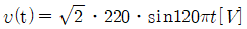
의 순시전압을 인가한 경우, 회로에 흐르는 실효전류(A)는 얼마인가?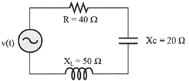
- 2.0
- 3.1
- 4.4
- 5.5
(정답률: 31%)
3과목: 소방관련법령
51. 소방기본법령상 소방대의 생활안전활동에 해당하지 않는 것은?
- 붕괴, 낙하 등이 우려되는 고드름, 나무, 위험 구조물 등의 제거 활동
- 위해동물, 벌 등의 포획 및 퇴치 활동
- 단전사고 시 비상전원 또는 조명의 공급
- 집회ㆍ공연 등 각종 행사 시 사고에 대비한 근접대기 등 지원활동
(정답률: 50%)
52. 소방기본법령상 보상 제도에 관한 설명이다. ()에 들어갈 말을 순서대로 바르게 나열한 것은?
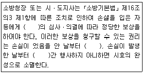
- 손해보상심의위원회-3년-5년
- 손실보상심의위원회-3년-5년
- 손해보상심의위원회-5년-10년
- 손실보상심의위원회-5년-10년
(정답률: 51%)
53. 소방기본법령상 소방자동차 전용구역에 관한 설명으로 옳지 않은 것은?
- 세대수가 100세대 이상인 아파트의 건축주는 소방자동차 전용구역을 설치하여야 한다.
- 소방자동차 전용구역 노면표지 도료의 색채는 황색을 기본으로 하되, 문자(P, 소방차 전용)는 백색으로 표시한다.
- 소방자동차 전용구역에 물건 등을 쌓거나 주차하는 등의 방해행위를 하여서는 아니된다.
- 전용구역 방해행위를 한 자는 100만원 이하의 벌금에 처한다.
(정답률: 41%)
54. 소방기본법령상 용어의 정의에 관한 설명으로 옳지 않은 것은?
- “관계인”이란 소방대상물의 소유자ㆍ관리자 또는 점유자를 말한다.
- “관계지역”이란 소방대살물이 있는 장소 및 그 이웃 지역으로서 화재의 예방ㆍ경계ㆍ진압, 구조ㆍ구급 등의 활동에 필요한 지역을 말한다.
- “소방대”란 화재를 진압하고 화재, 재난ㆍ재해, 그 밖의 위급한 상황에서 구조ㆍ구급 활동 등을 하기 위하여 소방공무원, 의무소방원, 의용소방대원, 사회복무요원으로 구성된 조직체를 말한다.
- “소방본부장”이란 특별시ㆍ광역시ㆍ특별자치시ㆍ도 또는 특별자치도에서 화재의 예방ㆍ경계ㆍ진압ㆍ조사 및 구조ㆍ구급 등의 업무를 담당하는 부서의 장을 말한다.
(정답률: 53%)
55. 소방시설공사업법령상 용어에 관한 설명으로 옳은 것은?
- 방염처리업은 소방시설업에 포함된다.
- 위험물기능장은 소방기술자 대상에 포함되지 않는다.
- 소방시설관리업은 소방시설업에 포함된다.
- 화재감식평가기사는 소방기술자 대상에 포함된다.
(정답률: 43%)
56. 소방시설공사업법령상 완공검사를 위한 현장확인 대상 특정소방대상물이 아닌 것은?
- 판매시설
- 창고시설
- 노유자시설
- 운수시설
(정답률: 39%)
57. 소방시설공사업법령상 소방시설업자협회의 업무에 해당하지 않는 것은?
- 소방산업의 발전 및 소방기술의 향상을 위한 지원
- 소방시설업의 기술발전과 관련된 국제교류ㆍ활동 및 행사의 유치
- 소방시설업의 사익증진과 과태료 부과 업무에 관한 사항
- 소방시설업의 기술발전과 소방기술의 진흥을 위한 조사ㆍ연구ㆍ분석 및 평가
(정답률: 56%)
58. 화재예방, 소방시설 설치ㆍ유지 및 안전관리에 관한 법령상 소방시설에 대한 설명으로 옳은 것은?
- 수용인원 50명인 문화 및 집회시설 중 영화상영관은 공기호흡기를 설치하여야 한다.
- 비상경보설비는 소방시설의 내진설계기준에 맞게 설치하여야 한다.
- 분말형태의 소화약제를 사용하는 소화기의 내용연수는 5년으로 한다.
- 불연성물품을 저장하는 창고는 옥외소화전 및 연결살수설비를 설치하지 아니할 수 있다.
(정답률: 35%)
59. 화재예방, 소방시설 설치ㆍ유지 및 안전관리에 관한 법령상 시ㆍ도지사가 소방시설관리업 등록을 반드시 취소하여야 하는 사유로 옳은 것을 모두 고른 것은?
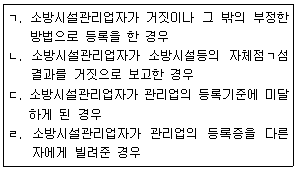
- ㄱ, ㄴ
- ㄱ, ㄹ
- ㄴ, ㄷ
- ㄷ, ㄹ
(정답률: 57%)
60. 화재예방, 소방시설 설치ㆍ유지 및 안전관리에 관한 법령상 중앙소방특별조사단의 조사단원이 될 수 있는 사람을 모두 고른 것은?
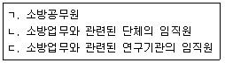
- ㄱ
- ㄱ, ㄴ
- ㄴ, ㄷ
- ㄱ, ㄴ, ㄷ
(정답률: 50%)
61. 화재예방, 소방시설 설치ㆍ유지 및 안전관리에 관한 법령상 연소방지설비는 어떤 소방시설에 속하는가?
- 소화설비
- 소화용수설비
- 소화활동설비
- 피난구조설비
(정답률: 61%)
62. 화재예방, 소방시설 설치ㆍ유지 및 안전관리에 관한 법령상 방염대상물품이 아닌 것은?
- 철재를 원료로 제작된 의자
- 카펫
- 전시용 합판
- 창문에 설치하는 커튼류
(정답률: 64%)
63. 화재예방, 소방시설 설치ㆍ유지 및 안전관리에 관한 법령상 소방안전관리대상물의 관계인이 소방안전관리자를 선임한 경우에 소방안전관리대상물의 출입자가 쉽게 알 수 있도록 제시하여야 하는 사항이 아닌 것은?
- 소방안전관리자의 성명
- 소방안전관리자의 소방관련 경력
- 소방안전관리자의 연락처
- 소방안전관리자의 선임일자
(정답률: 67%)
64. 화재예방, 소방시설 설치ㆍ유지 및 안전관리에 관한 법령상 과태료 처분에 해당하는 경우는?
- 형식승인의 변경승인을 받지 아니한 자
- 화재안전기준을 위반하여 소방시설을 설치 또는 유지ㆍ관리한 자
- 영업정지처분을 받고 그 영업정지기간 중에 관리업의 업무를 한 자
- 소방시설등에 대한 자체점검을 하지 아니하거나 관리업자 등으로 하여금 정기적으로 점검하게 하지 아니한 자
(정답률: 24%)
65. 화재예방, 소방시설 설치ㆍ유지 및 안전관리에 관한 법령상 방염성능기준 이상의 실내장식물 등을 설치하여야 하는 특정소방대상물이 아닌 것은?
- 공항시설
- 숙박시설
- 의료시설 중 종합병원
- 노유자시설
(정답률: 50%)
66. 위험물안전관리법령상 시ㆍ도지사의 허가를 받아야 설치할 수 있는 제조소등은?
- 주택의 난방시설을 위한 취급소
- 축산용으로 필요한 건조시설을 위한 지정수량 20배 이하의 저장소
- 공동주택의 중앙난방시설을 위한 저장소
- 농예용으로 필요한 난방시설을 위한 지정수량 20배 이하의 저장소
(정답률: 51%)
67. 위험물안전관리법령상 탱크안정성능검사의 대상이 되는 탱크 등에 관한 내용이다. ()에 들어갈 숫자로 옳은 것은?
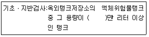
- 20
- 50
- 70
- 100
(정답률: 49%)
68. 위험물안전관리법령상 제조소등의 위험물안전관리자(이하 “안전관리자”라 함)에 관한 설명으로 옳은 것은?
- 제조소등의 관계인이 안전관리자가 질병 등의 사유로 일시적으로 직무를 수행할 수 없어 대리자를 지정하는 경우, 대리자가 안전관리자의 직무를 대행하는 기간은 15일을 초과할 수 없다.
- 제조소등의 관계인이 안전관리자를 해임한 경우 그 관계인 또는 안전관리자는 소방본부장이나 소방서장에게 그 사실을 알려 해임된 사실을 확인받을 수 있다.
- 제조소등의 관계인이 안전관리자를 선임한 경우에는 선임한 날부터 30일 이내에 소방본부장 또는 소방서장에게 신고하여야 한다.
- 안전관리자를 선임한 제조소등의 관계인은 안전관리자가 퇴직한 때에는 퇴직한 날부터 60일 이내에 다시 안전관리자를 선임하여야 한다.
(정답률: 36%)
69. 위험물안전관리법령상 과태료 처분에 해당하는 경우는?
- 정지점검 결과를 기록ㆍ보존하지 아니한 자
- 제조소등의 설치허가를 받지 아니하고 제조소등을 설치한 자
- 안전관리자 또는 그 대리자가 참여하지 아니한 상태에서 위험물을 취급한 자
- 위험물의 운반에 관한 중요기준에 따르지 아니한 자
(정답률: 34%)
70. 위험물안전관리법령상 정기점검의 대상인 제조소등의 아닌 것은?
- 판매취급소
- 이동탱크저장소
- 이송취급소
- 지하탱크저장소
(정답률: 36%)
71. 다중이용업소의 안전관리에 관한 특별법령상 안전시설등의 설치ㆍ유지에 관한 설명이다. ()에 들어갈 내용으로 옳은 것은?
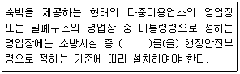
- 간이스프링클러설비
- 비상조명등
- 자동화재탐지설비
- 가스누설경보기
(정답률: 55%)
72. 가중이용업소의 안전관리에 관한 특별법령상 화재배상책임보험의 가입과 관련하여 과태료 부과 대상에 해당하지 않는 것은?
- 화재배상책임보험에 가입하지 않은 다중이용업주
- 정당한 사유 없이 계약 체결을 거부한 보험회사
- 화재배상책임보험 외의 보험 가입을 권유한 보험회사
- 임의로 계약을 해제 또는 해지한 보험회사
(정답률: 50%)
73. 다중이용업소의 안전관리에 관한 특별법령상 다중이용업에 해당하지 않는 것은?
- 비디오물감상실업
- 노래연습장업
- 산후조리업
- 노인의료복지업
(정답률: 53%)
74. 다중이용업소의 안전관리에 관한 특별법령상 이행강제금에 대한 설명으로 옳지 않은 것은?
- 이행강제금의 1회 부과 한도는 1천만원 이하이다.
- 조치 명령을 받은 자가 조치 명령을 이행하면, 이미 부과된 이행강제금도 징수할 수 없다.
- 이행강제금을 부과하기 전에 이행강제금을 부과ㆍ징수한다는 것을 미리 문서로 알려주어야 한다.
- 최초의 조치 명령을 한 날을 기준으로 매년 2회의 범위에서 그 조치 명령이 이행될 때까지 반복하여 이행강제금을 부과ㆍ징수할 수 있다.
(정답률: 46%)
75. 다중이용업소의 안전관리에 관한 특별법령상 영업장 내부를 구획하고자 할 때 천장(반자속)까지 불연재료로 구획해야 하는 업종에 해당하는 것은?
- 산후조리업
- 게임제공업
- 단란주점 영업
- 고시원업
(정답률: 45%)
4과목: 위험물의 성상 및 시설기준
76. 아염소산나트륨(NaClO2)에 관한 설명으로 옳지 않은 것은?
- 매우 불안정하여 180℃ 이상 가열하면 발열 분해하여 O2를 발생한다.
- 가연성물질로서 가열, 충격, 마찰에 의해 발화, 폭발한다.
- 암모니아. 아민류와 반응하여 폭발성의 물질을 생성한다.
- 수용액 상태에서도 산화력을 가지고 있다.
(정답률: 40%)
77. 황 480g이 공기 중에서 완전 연소할 때 발생되는 이산화황(SO2) 가스의 발생량(g)은? (단, 황의 원자량은 32, 산소의 원자량은 16으로 한다.)
- 630
- 730
- 850
- 960
(정답률: 46%)
78. 나트륨(Na)에 관한 설명으로 옳지 않은 것은?
- 수은과 격렬하게 반응하여 나트륨 아말감을 만든다.
- 물과 격렬하게 반응하여 발열하고 O2를 발생한다.
- 에틸알코올과 반응하여 H2를 발생한다.
- 질산과 격렬하게 반응하여 H2를 발생한다.
(정답률: 54%)
79. 철분(Fe)에 관한 설명으로 옳지 않은 것은?
- 절삭유와 같은 기름이 묻은 철분을 장기 방치하면 자연발화하기 쉽다.
- 용융 유황과 접촉하면 폭발하며 무기과산화물과 혼합한 것은 소량의 물에 의해 발화한다.
- 금속의 온도가 충분히 높을 때 수증기와 반응하면 O2를 발생한다.
- 발연질산에 넣었다가 꺼내면 산화 피막을 형성하여 부동태가 된다.
(정답률: 55%)
80. 디에틸에테르(C2H5OC2H5)에 관한 설명으로 옳지 않은 것은?
- 물과 접촉 시 격렬하게 반응한다.
- 비점, 인화점, 발화점이 매우 낮고 연소범위가 넓다.
- 연소범위의 하한치가 낮아 약간의 증기가 누출되어도 폭발을 일으킨다.
- 증기압이 높아 저장용기가 가열되면 변형이나 파손되기 쉽다.
(정답률: 50%)
81. 제3류 위험물이 아닌 것은?
- 황린
- 중크롬산염
- 탄화칼슘
- 알킬리튬
(정답률: 56%)
82. 히드라진(H2H4)에 관한 설명으로 옳지 않은 것은?
- 공기 중에서 가열하면 약 180℃에서 다량의 NH3, H2, N2를 발생한다.
- 산소가 존재하지 않아도 폭발할 수 있다.
- 강알칼리, 강환원제와는 반응하지 않는다.
- CuO, CaO, HgO, BaO과 접촉할 때 불꽃이 발생하여 혼촉발화한다.
(정답률: 44%)
83. 과염소산(HClO4)에 관한 설명으로 옳지 않은 것은?
- 종이, 나뭇조각 등의 유기물과 접촉하면 연소ㆍ폭발한다.
- 알코올과 에테르에 폭발위험이 있고, 불순물과 섞여있는 것은 폭발이 용이하다.
- 물과 반응하면 심하게 발열하며 소리를 낸다.
- 아염소산보다는 약한 산이다.
(정답률: 55%)
84. 니트로소화합물에 관한 설명으로 옳은 것은?
- 분해가 용이하고 가열 또는 충격ㆍ마찰에 안정하다.
- 연소속도가 느리다.
- 니트로소기(-NO)가 결합된 유기화합물이다.
- 질식소화가 효과적이다.
(정답률: 50%)
85. 위험물안전관리법령상 제조소의 위치ㆍ구조 및 설비의 기준에서 지정수량 5배의 히드록실아민(NH2OH)을 취급하는 위험물 제조소의 외벽과 병원(의료법에 의한 병원급 의료기관)의 안전거리로 옳은 것은?
- 58m 이상
- 68m 이상
- 78m 이상
- 88m 이상
(정답률: 38%)
86. 제4류 위험물 중 제1석유류가 아닌 것은?
- 벤젠
- 아세톤
- 에틸렌글리콜
- 메틸에틸케톤
(정답률: 48%)
87. 위험물안전관리법령상 브롬산칼륨(KBrO3)의 지정 수량(kg)은?
- 50
- 100
- 200
- 300
(정답률: 57%)
88. 다음 물질 중 발화점이 가장 낮은 것은?
- 아크롤레인
- 톨루엔
- 메틸에틸케톤
- 초산에틸
(정답률: 35%)
89. 분자량 227g/mol인 니트로글리세린[C3H5(ONO2)3] 2,000g이 부피 1,500mL인 비파괴성 용기에서 폭발하였다. 폭발 당시의 온도가 500℃라면 이때의 압력(atm)은? (단, 절대온도 273K, 기체상수 0.082Lㆍatm/Kㆍmol이며, 소수점 이하는 절삭한다.)
- 372
- 400
- 485
- 575
(정답률: 48%)
90. 다음은 위험물안전관리법령상 제조소의 위치ㆍ구조 및 설비의 기준에 관한 내용이다. ()에 알맞은 숫자를 순서대로 나열한 것은?
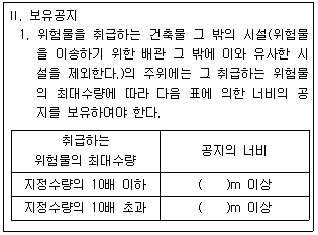
- 1, 3
- 2, 3
- 3, 5
- 5, 7
(정답률: 61%)
91. 위험물안전관리법령상 제조소의 위치ㆍ구조 및 설비의 기준에서 배관의 설치에 관한 설명으로 옳은 것은?
- 배관의 재질은 폴리에틸렌(PE)관 그 밖에 이와 유사한 금속성으로 하여야 한다.
- 배관에 걸리는 최대상용압력의 1.2배 이상의 압력으로 수압시험을 실시하여야 한다.
- 지상에 설치하는 배관은 지진ㆍ풍압ㆍ지반침하 및 온도변화에 안전한 구조의 지지물에 설치하여야 한다.
- 지하에 매설하는 배관은 지면에 미치는 중량이 당해 배관에 미치도록 하여 안전하게 하여야 한다.
(정답률: 51%)
92. 위험물안전관리법령상 제조소의 위치ㆍ구조 및 설비의 기준에서 표지 및 게시판에 관한 설명으로 옳지 않은 것은?
- “위험물제조소”의 표지는 백색바탕에 흑색문자로 할 것
- 제1류 위험물의 “물기엄금”의 표지는 청색바탕에 백색문자로 할 것
- 제4류 위험물의 “화기엄금”의 표지는 적색바탕에 백색문자로 할 것
- 제5류 위험물의 “화기주의”의 표지는 적색바탕에 백색문자로 할 것
(정답률: 46%)
93. 위험물안전관리법령상 소화설비, 경보설비 및 피난설비의 기준에서 위험물제조소의 연면적이 2,000m2 또는 저장 및 취급하는 위험물이 지정수량의 150배 이상인 위험물제조소에 설치하여야 하는 소화설비로 옳은 것을 모두 고른 것은?
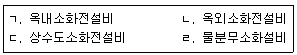
- ㄱ, ㄴ, ㄷ
- ㄱ, ㄴ, ㄹ
- ㄱ, ㄷ, ㄹ
- ㄴ, ㄷ, ㄹ
(정답률: 50%)
94. 위험물안전관리법령상 옥외탱크저장소의 위치ㆍ구조 및 설비의 기준에서 인화성 액체위험물(이황화탄소를 제외한다) 옥외탱크저장소의 탱크 주위에 설치하는 방유제의 설치높이 기준으로 옳은 것은?
- 0.1m 이상 1m 이하
- 0.3m 이상 2m 이하
- 0.5m 이상 3m 이하
- 0.7m 이상 4m 이하
(정답률: 58%)
95. 위험물안전관리법령상 옥외저장소의 위치ㆍ구조 및 설비의 기준에서 옥외저장소에 위험물을 저장하는 경우 저장장소 주위에 배수구 및 집유설비를 설치하여야 하는 위험물이 아닌 것은?
- 에틸알코올
- 디에틸에테르
- 톨루엔
- 초산에틸
(정답률: 39%)
96. 위험물안전관리법령상 옥외탱크저장소의 위치ㆍ구조 및 설비의 기준에서 무연가솔린 5,000리터를 저장하는 위험물 옥외탱크저장소에는 접지시설을 하거나 피회침을 설치하여야 한다. 이 경우 위험물 옥외탱크저장소에 피회침을 설치하지 아니할 수 있는 접지시설의 저항 값으로 옳은 것은?
- 5Ω 이하
- 10Ω 이하
- 15Ω 이하
- 20Ω 이하
(정답률: 40%)
97. 위험물안전관리법령상 이송취급소의 위치ㆍ구조 및 설비의 기준에서 배관을 지하에 매설하는 경우 건축물의 외면으로부터 배관까지의 안전거리는? (단, 지하가내의 건축물을 제외한다.)
- 0.5m 이상
- 0.75m 이상
- 1.0m 이상
- 1.5m 이상
(정답률: 35%)
98. 위험물안전관리법령상 제조소의 위치ㆍ구조 및 설비의 기준에서 위험물을 취급하는 건축물의 지분(작업공정상 제조기계시설 등이 2층 이상에 연결되어 설치된 경우에는 최상층의 지붕을 말한다.)을 내화구조로 할 수 없는 것은?
- 제1류 위험물
- 제2류 위험물(분상의 것과 인화성고체 제외)
- 제4류 위험물 중 제4석유류ㆍ동식물유류
- 제6류 위험물을 취급하는 건축물
(정답률: 44%)
99. 위험물안전관리법령상 옥내저장소의 위치ㆍ구조 및 설비의 기준에서 제4류 위험물 중 아세톤을 보관하는 하나의 옥내저장창고(2 이상의 구획된 실이 있는 때에는 각 실의 바닥 면적의 합계로 한다.)의 최대 바닥 면적(m2)은?
- 500
- 1,000
- 1,500
- 2,000
(정답률: 50%)
100. 위험물안전관리법령상 수소충전설비를 설치한 주유취급소의 특례에 관한 설명으로 옳지 않은 것은?
- 충전설비의 위치는 주유공지 또는 급유공지 내의 장소로 한다.
- 충전설비는 자동차 등의 충돌을 방지하는 조치를 마련하여야 한다.
- 충전설비는 자동차 등의 충동을 감지하여 운전을 자동으로 정지시키는 구조이어야 한다.
- 충전설비의 충전호스는 자동차 등의 가스충전구와 정상적으로 접속하지 않는 경우에 는 가스가 공급되지 않는 구조로 하여야 한다.
(정답률: 53%)
5과목: 소방시설의 구조원리
101. 비상방송설비의 화재안전기준상 배선의 설치기준으로 옳은 것은?
- 화재로 인하여 하나의 층의 확성기 또는 배선이 단락 또는 단선되어도 다른 층의 화재통보에 지장이 없도록 한다.
- 전원회로의 배선은 옥내소화전설비의 화재안전기준(NFSC 102)에 내화배선 또는 내열배선에 따라 설치한다.
- 전원회로의 부속회로는 전로와 대지 사이 및 배선 상호간의 절연저항은 1경계구역마다 직류 500V의 절연저항측정기를 사용하여 측정한 절연저항이 0.1MΩ이상이 되도록 한다.
- 비상방송설비의 배선은 다른 전선과 별도의 관ㆍ덕트 몰드 또는 풀박스등에 설치한다. 다만, 100V 미만의 약전류회로에 사용하는 전선으로서 각각의 전압이 같을 때에는 그러하지 아니하다.
(정답률: 52%)
102. 수신기 형식승인 및 제품검사의 기술기준상 수신기의 구조 및 일반기능으로 옳지 않은 것은?
- 화재신호를 수신하는 경우 P형, P형복합식, GP형, GP형복합식, R형, R형복합식, GR형 또는GR형복합식의 수신기에 있어서는 2이상의 지구표시장치에 의하여 각각 화재를 표시할 수 있어야 한다.
- 예비전원회로에는 단락사고 등으로부터 보호하기 위한 퓨즈 등 과전류 보호장치를 설치하여야 한다.
- 수신기(1회선용은 제외한다.)는 2회선이 동시에 작동하여도 화재표시가 되어야 하며, 감지기의 ㄱ감지 또는 발신기의 발신개시로부터 P형, P형복합식, GP형복합식, R형, R형복합식, GR형 또는 GR형복합식 수신기의 수신완료까지의 소요시간은 5초(축적형의 경우에는 60초)이내이어야 한다.
- 부식에 의하여 전기적 기능에 영향을 초래할 우려가 있는 부분은 칠, 도금 등으로 유효하게 내식가공을 하거나 방청가공을 하여야 하며, 기계적 기능에 영향이 있는 단자, 나사 및 와셔 등은 동합금이나 이와 동등이상의 내식성능이 있는 재질을 사용하여야 한다.
(정답률: 27%)
103. 스프링클러설비의 화재안전기준상 다음 조건에서 폐쇄형스프링클러헤드의 기준개수는?
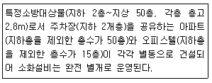
- 아파트:10개, 오피스텔:10개
- 아파트:10개, 오피스텔:30게
- 아파트:20개, 오피스텔:20게
- 아파트:20개, 오피스텔:30개
(정답률: 47%)
104. 국가화재안전기준상 배관의 기울기에 관한 내용으로 옳지 않은 것은?
- 습식스프링클러설비 또는 부압식 스프링클러설비 외의 설비에는 헤드를 향하여 상향으로 수평주행배관의 기울기를 500분의 1이상, 가지배관의 기울기를 250분의 1 이상으로 할 것. 다만, 배관의 구조상 기울기를 줄 수 없는 경우에는 배수를 원활하게 할 수 있도록 배수밸브를 설치하여야 한다.
- 간이스프링클러설비의 배관을 수평으로 할 것. 다만, 배관의 구조상 소화수가 남아 있는 곳에는 배수밸브를 설치하여야 한다.
- 연소방지설비에 있어서의 수평주행배관의 구경은 100mm 이상의 것으로 하되, 연소방지설비전용헤드 및 스프링클러헤드를 향하여 상향으로 1,000분의 1 이상의 기울기로 설치하여야 한다.
- 개방형 미분무소화설비에는 헤드를 향하여 하향으로 수평주행배관의 기울기를 1,000분의 1 이상, 가지배관의 기울기를 500분의 1 이상으로 할 것. 다만, 배관의 구조상 기울기를 줄 수 없는 경우에는 배수를 원활하게 할 수 있도록 배수밸브를 설치하여야 한다.
(정답률: 40%)
1⑤. 소방용 가압송수장치 전동기가 3상3선식 380V로 작동하고 있다. 전동기의용량이 85kW, 역률 90%, 전기공급설비로부터 100m 떨어져 있으며 전선에서의 전압강하를 10V까지 허용할 경우 전선의 최소 굵기(mm2)는 약 얼마인가?
- 41.1
- 42.1
- 43.2
- 44.2
(정답률: 25%)
106. P형 1급 수신기와 감지기화의 배선회로에서 회로 종단저항은 10kΩ이고, 감지기 회로저항은 30Ω, 릴레리저항은 20Ω, 회로전압 DC 24V일 때, 평상시 수신반에서의 감시전류[mA]는 약 얼마인가?
- 2.39
- 3.39
- 4.25
- 5.25
(정답률: 42%)
107. 고가수조를 보호하기 위하여 피뢰침을 설치한 경우 피뢰부의 소방시설 도시기호는?
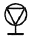
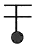
(정답률: 38%)
108. 지상 30층 아파트에 스프링클러설비가 설치되어 있고 세대별 헤드 수는 12개 일 때, 옥상수조 수원의 양을 포함하여 확보하여야 할 스프링클러설비 최소 수원의 양(m3)은 약 얼마 이상인가?
- 32.0
- 38.4
- 42.7
- 51.2
(정답률: 43%)
109. 국가화재안전기준상 음향장치 및 음향경보장치 기준으로 옳지 않은 것은?
- 비상벨설비 또는 자동식사이렌의 음향장치의 음량은 부착된 음향장치의 중심으로부터 1m 떨어진 위치에서 90dB 이상이 되는 것으로 하여야 한다.
- 화재조기진압용 스프링클러설비의 음향장치의 음량은 부착된 음향장치의 중심으로부터 1m 떨어진 위치에서 90폰 이상이 되는 것으로 한다.
- 이산화탄소소화설비의 음향경보장치는 소화약제의 방사개시 후 30초 이상 경보를 계속 할 수 있는 것으로 한다.
- 할로겐화합물 및 불활성기체소화설비의 음향경보장치는 소화약제의 방사개시 후 1분 이상 경보를 계속할 수 있는 것으로 한다.
(정답률: 55%)
110. 연소방지설비의 화재안전기준상 연소방지도료의 도포에 관한 기준으로 옳은 것은?
- 리본가스버너의 불꽃의 길이는 240mm 이상이어야 하고, 트레이격자 사이의 시료중 심에서 불꽃이 닿도록 할 것
- 시료의 배열은 수직형트레이 중심부분에 시료를 단층으로 배열하고 전선의 직경 1/2간격으로 폭 130mm 이상이 되도록 금속제 사다리 중앙부에 배열할 것
- 수직형트레이 시험기의 온도측정용 온도감지센서는 불꽃과 가능한 멀리 설치하여야 하며, 시험편과 닿지 않도록 3mm의 거리를 두어 설치하여야 할 것
- 버너면은 시험편 표면에서부터 76mm 간격을 두어야 하며, 수직형트레이 바닥에서 600mnm 높이에 수평으로 장치하여야 할 것
(정답률: 34%)
111. 다음 직병렬 복합 누설경로 그림에서 제연실에서의 총 유효누설면적(m2)은 얼마 인가? (단, A1=A2=A3=0.02m2, A4=A5=0.01m2, 소수점 이하 넷째자리에서 반올림한다.)
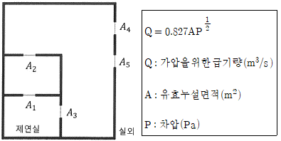
- 0.007
- 0.017
- 0.027
- 0.037
(정답률: 34%)
112. 제연설비의 화재안전기준상 예상제연구역에 대한 배출구의 설치기준으로 옳은 것은?
- 바닥면적이 400m2 미만인 예상제연구역이 벽으로 구획되어 있는 경우의 배출구는 바닥 이외의 천장ㆍ방자 또는 이에 가까운 벽의 부분에 설치한다.
- 바닥면적이 400m2 미만인 예상제연구역의 경우 배출구를 벽에 설치한 경우에는 배출구의 중심이 가장 짧은 제연경계의 하단보다 높이 되도록 하여야 한다.
- 바닥면적이 400m2 이상인 통로외의 예상제연구역에 대한 배출구를 벽에 설치한 경우에는 배출구의하단과 바닥간의 최단거리가 2m 이상이어야 한다.
- 바닥면적이 400m2 이상인 통로 예상제연구역 중 어느 한 부분이 제연경계로 구획되어 있을 경우 배출구를 벽 또는 제연경계에 설치하는 겨울에는 제연경계의 수직거리가 가장 짧은 제연경계의 하단보다 낮게 설치하여야 한다.
(정답률: 27%)
113. 유도등 및 유도표지의 화재안전기준상 피난구유도등 설치 제외 대상에 관한 설명이다. ()에 들어갈 특정소방대상물로 옳지 않은 것은?
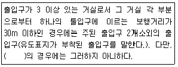
- 공연장, 숙박시설
- 노유자시설, 공동주택
- 판매시설, 집회장
- 전시장, 장례식장
(정답률: 39%)
114. 할로겐화합물 및 불활성기체소화설비의 화재안전기준상 배관의 설치기준으로 옳지 않은 것은?
- 할로겐화합물 및 불활성기체소화설비의 배관은 전용으로 하여야 한다.
- 강관을 사용하는 경우의 배관은 압력배관용탄소강관(KS D 3562) 또는 이와 동등 이상의 강도를 가진 것으로서 아연도금 등에 따라 방식처리된 것을 사용하여야 한다.
- 배관과 배관, 배관과 배관부속 및 밸브류의 접속은 나사접합, 용접접한, 압축접한 또는 플랜지접합 등의 방법을 사용하여야 한다.
- 배관의 구경은 해당 방호구역에 할로겐화합물약제는 10초 이내에, 불활성기체소화약제는 AㆍC급 화재 1분, B급 화재 2분 이내에 방호구역 각 부분에 최소설계농도의 95% 이상 해당하는 약제량이 방출되도록 하여야 한다.
(정답률: 50%)
115. 자동화재속보설비의 화재안전기준상 설치기준으로 옳은 것은?
- 조작스위치는 바닥으로부터 1.5m 이하의 높이에 설치한다.
- 속보기는 소방관서에 통신망으로 통보하도록 하며, 데이터 또는 코드전송방식을 부가적으로 설치할 수 없다.
- 노유자시설에 설치하는 자동화재속보설비는 속보기에 감지기를 직접 연결하는 방식으로 한다.
- 자동화재탐지설비와 연동으로 작동하여 자동적으로 화재발생 상황을 소방관서에 전달되는 것으로 한다.
(정답률: 47%)
116. 자동화재탐지설비 및 시각경보장치의 화재안전기준상 지상 15층, 지하 3층으로 연면적이 3,000m2를 초과하는 특정소방대상물에 화재가 발생하여 자동화재탐지설비를 통해 지하 1층, 지하 2층, 지하 3층, 지상 1층에 경보가 발하여진 경우, 발화층은?
- 지하 3층
- 지하 2층
- 지하 1층
- 지상 2층
(정답률: 53%)
117. 할로겐화합물 및 불활성기체소화설비의 화재안전기준상 소화약제의 최대허용 설계농도(%) 기준으로 옳은 것은?
- HCFC-124:2.0
- HFC-227ea:10.5
- HFC-236fa:13.5
- IG-100:53
(정답률: 48%)
118. 분말소화설비를 방호구역에 전역방출방식으로 설치하고자 한다. 소화약제는 제4종 분말이고, 방호구역의 체적이 150m3, 개구부의 면적이 3m2이며, 자동폐쇄장치를 설치하지 아니한 경우 분말소화약제의 최소 저장량(kg)은?
- 41.4
- 49.5
- 59.4
- 67.5
(정답률: 42%)
119. 자동화재탐지설비 및 시각경보장치의 화재안전기준상 부착높이가 8m 이상 15m 미만일 경우 적응성 있는 감지기의 종류로 옳지 않은 것은?
- 차동식 스포트형
- 차동식 분포형
- 연기복합형
- 불꽃감지기
(정답률: 53%)
120. 화재조기진압용 스프링클러설비의 화재안전기준상 헤드에 관한 기준으로 옳지 않은 것은?
- 헤드의 작동온도는 74℃ 이하로 한다.
- 하향식 헤드의 반사판의 위치는 천장이나 반자 아래 115mm 이상 355mm 이하로 한다.
- 헤드의 반사판은 천장 또는 반자와 평행하게 설치하고, 저장물의 최상부와 914mm 이상 확보되도록 한다.
- 헤드 하나의 방호면적은 6.0m2이상 9.3m2이하로 한다.
(정답률: 40%)
121. 물분무소화설비의 화재안전기준상 물분무소화설비를 투영된 바닥면적이 50m2인 케이블트레이에 설치하는 경우 필요한 최소 수원의 양(m3)은 얼마 이상인가?
- 10
- 12
- 20
- 24
(정답률: 48%)
122. 이산화탄소소화설비의 화재안전기준상 이산화탄소 소화약제 양(kg)으로 옳은 것은?
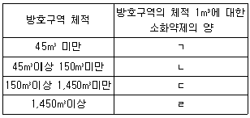
- ㄱ:0.75
- ㄴ:0.75
- ㄷ:0.75
- ㄹ:0.75
(정답률: 40%)
123. 연결송수관설비의 화재안전기준상 송수구의 설치기준으로 옳지 않은 것은?
- 습식의 경우에는 송수구ㆍ체크밸브ㆍ자동배수밸브의 순으로 설치한다.
- 지면으로부터 높이가 0.5m 이상 1.0 이하의 위치에 설치한다.
- 구경 65mm의 쌍구형으로 한다.
- 가까운 곳의 보기 쉬운 곳에 송수압력범위를 표시한 표지를 한다.
(정답률: 52%)
124. 피난기구의 화재안전기준상 숙박시설의 각 층의 바닥면적이 2.500m2 일 경우 층마다 설치하여야 하는 피난기구의 최소 개수는?
- 3개
- 4개
- 5개
- 6개
(정답률: 42%)
125. 이산화탄소소화설비의 화재안전기준상 소화약제의 저장용기 설치기준으로 옳지 않은 것은?
- 직사광선 및 빗물이 침투할 우려가 없는 곳에 설치할 것
- 방화문으로 구획된 실에 설치할 것
- 온도가 45℃이하이고, 온도변화가 적은 곳에 설치할 것
- 방호구역외의 장소에 설치할 것
(정답률: 48%)